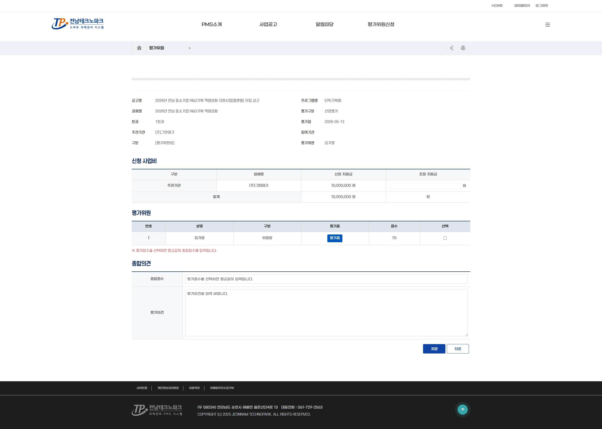
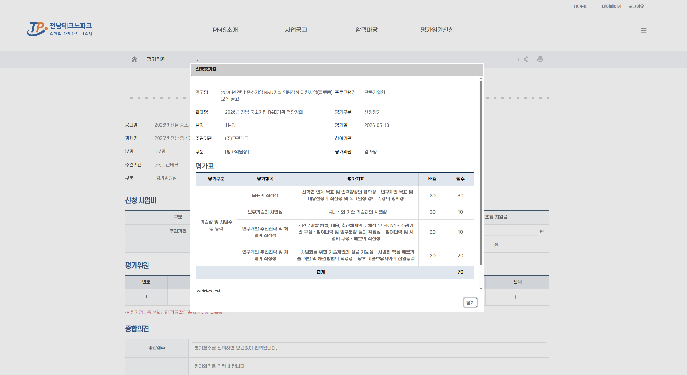
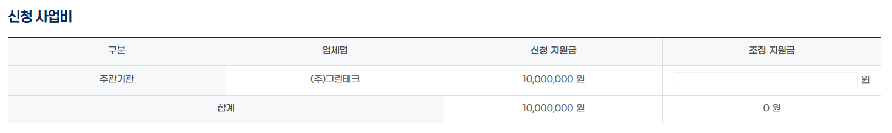

선정평가 진행 평가위원장
💡 안내
평가위원장은 개인 평가표 작성 외에 분과 내 위원들의 평가 현황을 조회하고 종합평가표를 확인할 수 있습니다.
1. 종합평가표 확인
분과 내 모든 평가위원의 점수 합산 현황을 종합평가표에서 확인합니다.

2. 평가위원별 평가표 확인
각 평가위원의 개별 평가표를 클릭하여 항목별 점수 및 의견을 확인합니다.

3. 조정지원금 입력
평가점수와 평가의견을 고려하여 신청 사업비의 조정지원금 입력란에 지원금 액수를 입력합니다.

💡 안내
평가위원장은 분과 내 모든 위원의 평가 완료 여부를 확인한 후 관리자에게 평가 완료를 알립니다.